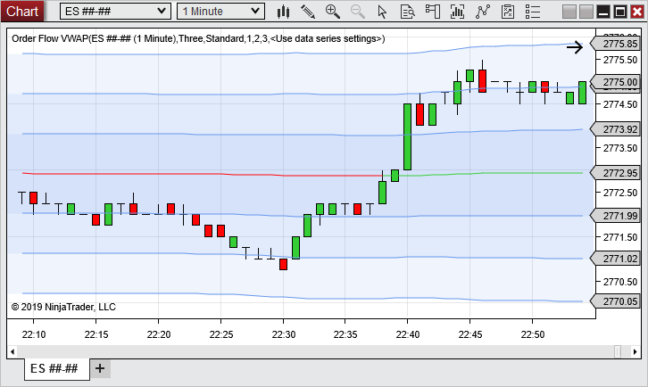
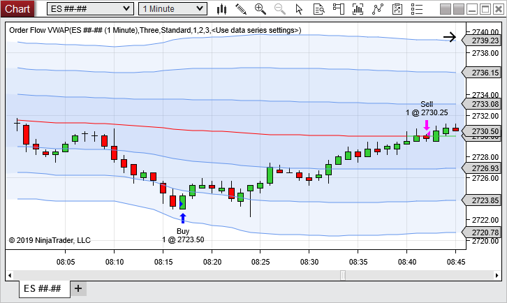
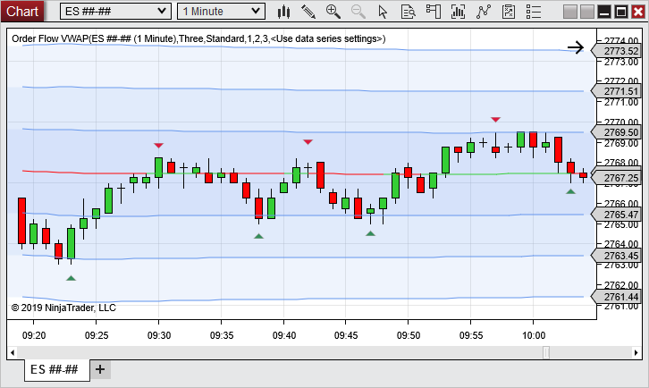
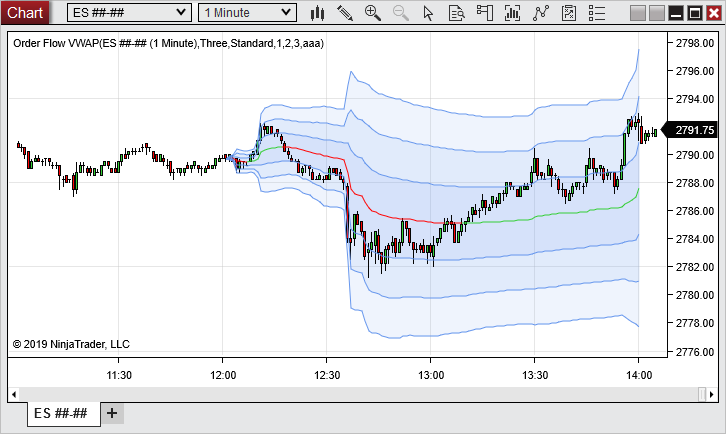

Description
Volume Weighted Average Price. A total of the dollars traded for every transaction (price multiplied by number of shares traded) and then divided by the total shares traded for the day. Also included are standard deviation bands.
 Order Flow VWAP Overview
Order Flow VWAP Overview
Display
The VWAP line is the green and red line. The VWAP by default is LimeGreen when below the price and Red when above the price.
The blue bands are the standard deviations of the VWAP. By default the closest one is a 1X multiplier, followed by a 2X multiplier, and a 3X multiplier.

Using the Order Flow VWAP
When using the Order Flow VWAP it is typical that users look for purchase signals when the price is below the VWAP. This would indicate that the purchase would be at a lower price than what is the average purchase per share for traders during the VWAP period. The price being below the VWAP can also result in pressure for the market to move back towards the VWAP. The opposite would be true for when the VWAP is above the price.

The VWAP and standard deviations are often used to indicate potential levels of support and resistance.

Since the Order Flow VWAP is a cumulative indicator, the longer it runs for the more the VWAP can lag. Using the parameter you can adjust during what times the indicator will run for. These settings work in combination with the selected Data Series and will not calculate outside of that.

|
Order Flow VWAP Parameters
Reset Interval
|
Session
|
Resets VWAP calculations every session
|
Week
|
Resets VWAP calculations weekly*
|
Month
|
Resets VWAP calculations monthly*
|
|
Resolution
|
Standard
|
Runs indicator on selected Input series
|
Tick
|
Runs indicator on a 1 tick time frame of the selected Input series (*most accurate and most resource intensive, therefore not available for Reset Intervals of Week and Month*)
|
|
Trading hours
|
Selection for what session to calculate on if VWAP is in Reset Interval Session mode
|
Std Dev bands
|
Selection for how many standard deviation bands to display
|
Std Dev 1 multiplier
|
Input for what multiplier to use for standard deviation 1
|
Std Dev 2 multiplier
|
Input for what multiplier to use for standard deviation 2
|
Std Dev 3 multiplier
|
Input for what multiplier to use for standard deviation 3
|
Color for above price
|
Color for when the VWAP line is above the price
|
Color for below price
|
Color for when the VWAP line is below the price
|
Color for band area
|
Fill in color between the standard deviation lines
|
Base opacity for band area
|
Opacity for the most outer standard deviation band. The opacity for each inner band is increased by 10%
|
|
Order Flow VWAP Values NinjaScript access
For information on how to access the Order Flow VWAP values in NinjaScript, please see the Order Flow VWAP page in the NinjaScript section of the Help Guide.
|